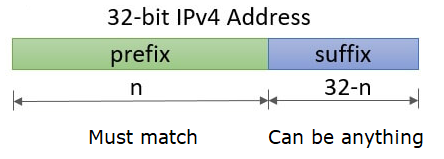
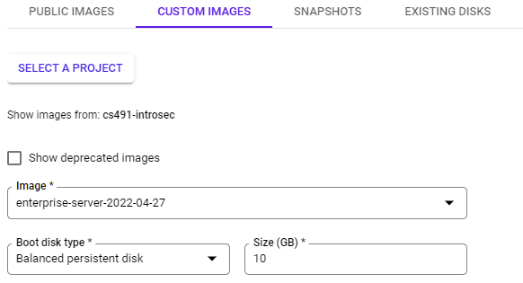
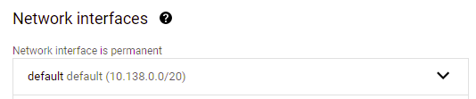
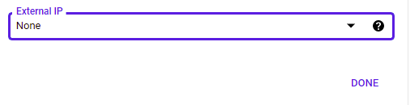
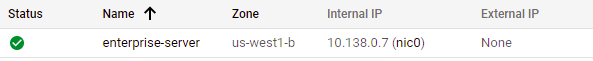
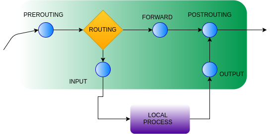
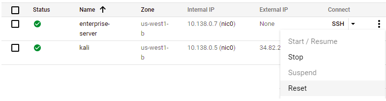
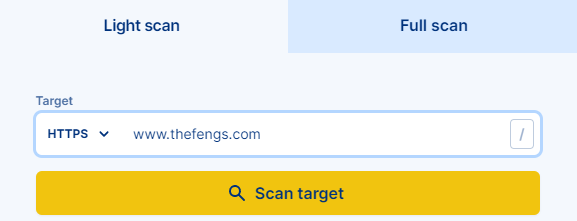

Working knowledge of CIDR prefixes is helpful when using scanning tools. Consider the two IP addresses below:
35.233.233.233 172.29.85.85
Expand out each address in binary notation. Then, answer the following questions for each one.
- Which /24 CIDR prefix does it belong to? How many addresses correspond to this prefix?
- Which /28 CIDR prefix does it belong to? How many addresses correspond to this prefix?
- Which /20 CIDR prefix does it belong to? How many addresses correspond to this prefix?
- Is the address publicly routable or is a private IP address?
Consider the following CIDR prefixes
131.252.220.0/26 172.29.80.0/20
- What address ranges do each of these CIDR prefixes specify?

Join the following room on TryHackMe: https://tryhackme.com/room/nmap01 (AttackBox).
The room provides an overview of subnetworks and scanning strategies using an animated network simulation. It also covers initial host-discovery using "ping" scans of various types including ARP scans (-PR) or arp-scan, ICMP Timestamp/Echo/Mask scans (-PP, -PE, -PM), TCP SYN/ACK ping scans (-PS, -PA), and UDP scans (-PU). Complete the exercise.
- Take a screenshot showing completion of the room
Join the following room on TryHackMe: https://tryhackme.com/room/furthernmap . The room covers full-range port scans using TCP Connect/SYN/Null/FIN/Xmas scans (-sT, -sS, -SN, -SF, -SX) and UDP scans (-sU). It also covers the nmap NSE script library supporting a variety of application scans. Complete the exercise.
- Take a screenshot showing completion of the room
In this section, we will bring up an "enterprise server" running a number of services which we can then have nmap perform a detailed scan of. Begin by visiting the Compute Engine console and start creating a new VM instance named enterprise-server in the same zone as your Kali VM (us-west1-b). When creating the VM, you will need to configure a number of different settings:
- Change the "Boot disk" to the enterprise server image by clicking on "CUSTOM IMAGES", selecting the PDX.EDU domain and then
cs491-introsecas a project, then using the latest image labeled "enterprise-server-20xx-.." as shown below.

- Expand the "Networking" dropdown and under "Network interfaces", click on the "default" network.

- Change the external IP address from "Ephemeral" to "None". This will ensure we perform our subsequent scans on the internal IP address of the server.

- Click on "DONE" and then create the VM.
- When the VM comes up, note its Internal IP address (
internal_enterprise_IP). This is the addressnmapwill scan.

Bring up your Kali VM and log into it. We'll be using nmap on this VM to do our network scans. Before doing so, however, we want to identify the internal IP addresses of the Kali VM and of the default router for the internal network. On the Kali VM, run the command below to show all network interfaces and their addresses.
ip address
Find the VM's private IPv4 address on the internal network (internal_kali_IP) typically associated with the eth0 device. Then, use the command below to find the private IPv4 address of the network's default gateway (internal_gateway_IP).
ip route
- List the three internal IP addresses (
internal_enterprise_IP,internal_kali_IP,internal_gateway_IP). Then, produce a CIDR prefix (internal_CIDR_prefix) containing a minimum number of addresses that can be used to scan them for your lab notebook)
nmap contains a number of heuristics for determining the exact version of the software running on a machine. As a defender, this is useful for performing an inventory of what is running within the network. However, for the attacker, this allows one to identify potential vulnerable software versions of services. We will now use nmap to scan the internal network. On the Kali VM, run nmap against the internal_CIDR_prefix to perform a version detection scan on all hosts that it finds. If the prefix has been calculated correctly, it should find all 3 devices and return the services running on them along with a best guess of their versions.
nmap -sV <internal_CIDR_prefix>
Note: if the command hangs, ensure that the VMs are all located within the same availability zone (e.g. us-west1-b).
Examine the output associated with the network's gateway
- What service does
nmapthink it is running? Look up information about the service and explain what it does. What happens to connections to other ports?
Examine the output associated with the Kali VM.
- What service does
nmapthink it is running? What is the release date of the version of the service being run? Is it the latest one? What happens to connections to other ports?
Examine the output associated with the enterprise server.
- Take a screenshot of the services and their versions. What happens to connections to other ports?
By default, the nmap command above scans TCP ports. Services can also run on UDP ports. Perform the command below to see any services running over UDP. UDP scans are typically much slower so we use the -F -T5 flags to only scan important ports and to reduce the amount of time nmap waits for a response before giving up on a port.
nmap -sU -F -T5 <internal_CIDR_prefix>
- Take a screenshot of the output. Which ports are open on both TCP and UDP?
Leave your session on the Kali VM up for the next steps.
We will now shift our attention to the enterprise-server to see what we can do to reduce its attack surface. From the Compute Engine console, click on "SSH" to bring up a shell on the machine.
One way to protect a server from unauthorized access is to perform network segmentation by filtering network traffic from locations that are not authorized. Linux can be configured with iptables rules that can be used to manage traffic going to/from/through the machine. Each rule is attached to a particular "chain", as shown in the figure below with the blue nodes.

Incoming traffic to a machine is sent to the INPUT chain. If we wish to filter out traffic from a particular host or set of hosts, we can place a rule in that chain to drop the host's traffic.
To demonstrate this, on the enterprise-server, add a DROP rule to the INPUT chain that filters out all traffic from the Kali VM. List the rule after it has been added to ensure it is the only one.
sudo iptables -A INPUT -s <internal_kali_IP> -j DROP sudo iptables --list
- Take a screenshot of the rules in place
Then, on the Kali VM, rerun the nmap command from before on the enterprise-server.
nmap -sV <internal_enterprise_IP>
- How many hosts are returned from the
nmap?
Back on the enterprise-server, delete the rule added (it should be the first one). Then, ensure that the INPUT chain is empty.
sudo iptables -D INPUT 1 sudo iptables --list
We can also apply filters that are based on port numbers. iptables provides a mechanism to specify multiple ports in a single rule via a range or a comma-separated list.
On the enterprise-server, fill in the command below, to filter every TCP port found via nmap to be open previously except the ssh port. List the rule after it has been added to ensure it is the only one.
sudo iptables -A INPUT -p tcp --match multiport --dports <list_of_ports> -j DROP sudo iptables --list
- Take a screenshot of the rules in place
Then, on the Kali VM, rerun the nmap command from before on the enterprise-server.
nmap -sV <internal_enterprise_IP>
- What STATE have the ports changed to? Explain the difference between a CLOSED port and a FILTERED one.
Back on the enterprise-server, delete the rule added. Then, ensure that the INPUT chain is empty.
sudo iptables -D INPUT 1 sudo iptables --list
Previous steps have shown how to filter incoming connections. One of the most useful filters for servers is to prevent any outgoing connection, especially when it is known that the server should not be making them. Eliminating outbound connections prevents server-side request forgery (SSRF) where an adversary tricks a server into accessing a network resource, the use of compromised services as a stepping stone to launch attacks (such as ssh-brute forcing attacks), and outgoing reverse-shells that implement backdoors for an adversary.
On the enterprise-server, perform an ssh onto the Kali VM to see you can connect.
ssh root@<internal_kali_IP>
Then, fill in the flags in the command below to attach an outgoing traffic filtering rule to prevent outgoing ssh connections.
sudo iptables -A <name_of_outgoing_chain> -p tcp --dport <SSH port> -j DROP sudo iptables --list
- Take a screenshot of the rules in place
Repeat the ssh to verify that the outgoing connection is now filtered out. Type Ctrl+c to terminate the command.
Delete the rule added. Then, ensure that the chain is empty.
sudo iptables -D <name_of_outgoing_chain> 1 sudo iptables --list
One of the most important tasks to improve the security of an organization is to bring down unused services. Given the list of open TCP and UDP ports on the enterprise-server, we will now shut down and disable each service responsible for them. On the enterprise-server, we will use tools to track down which processes own which ports, shut each one down, and then disable them from starting up again. We'll start with ftp.
On the enterprise-server, use lsof to list the command that is listening on the FTP port (e.g. 21) for incoming connections and its PID.
sudo lsof -iTCP:21 -sTCP:LISTENThe command shows that the program listening is inetd. Performing a ps or pstree and searching for inetd reveals its parent process is the init process, indicating that the service has likely been started at boot time by systemd. To see if this is the case, perform a systemctl command to list units, searching for inetd.
sudo systemctl list-units | egrep inetdStop the service and disable it on future reboots by performing the commands below:
sudo systemctl stop inetd
sudo systemctl disable inetdPerform the lsof command again to verify that the port is no longer active.
sudo lsof -iTCP:21 -sTCP:LISTENThen, on the Kali VM, rerun the nmap command from before on the enterprise-server to see that the FTP port has now been closed.
nmap -sV <internal_enterprise_IP>
Using the commands and methodology in the previous step, we will now investigate the processes that are listening on the other open ports, shut down those processes, and disable them.
Port 25
The process that owns this port is a Simple Mail Transfer Protocol (SMTP) server running a well-known email exchange distribution and is revealed in the processes it spawns. The systemd service that starts the daemons is named after the distribution. Find the name, then perform commands to stop and disable the service as before.
- Take a screenshot showing the command to disable the service and its output when executed
Port 53
DNS servers, both authoritative and local, run over this port, The systemd service that starts the daemon is "named" generically. Find the name, then perform commands to stop and disable the service as before. Note that we are stopping the Internet-facing service on port 53. A local DNS server is still left to proxy DNS requests for applications on the machine itself.
- Take a screenshot showing the command to disable the service and its output when executed
Port 80
Web servers run on this port when handling unencrypted connections. The systemd service that starts the daemon is named after the distribution of the server being used. Find the name, then perform commands to stop and disable the service as before.
- Take a screenshot showing the command to disable the service and its output when executed
Port 139
Windows file sharing is done via a network file sharing protocol called server message block (SMB). It was famously behind the Eternal Blue vulnerability that led to the devastating Petya and NotPetya malware. The systemd service that starts the daemon is named after the port. Find the name, then perform commands to stop and disable the service as before.
- Take a screenshot showing the command to disable the service and its output when executed
Port 389
The lightweight directory access protocol (LDAP) is an open-source protocol for supporting authentication. It can be used both on Linux and on Windows via Active Directory. The systemd service that starts the daemon is the name of the daemon that implements it. Find the name, then perform commands to stop and disable the service as before.
- Take a screenshot showing the command to disable the service and its output when executed
Port 631
The Internet Printing Protocol (IPP) is a commonly used protocol for sending print jobs over the network. The systemd services that start the two daemons associated with this service are named similarly to the daemon that implements it. Find the names of the two services, then perform commands to stop and disable both of them as before. Note that you must stop and disable both to completely remove the service.
- Take a screenshot showing the commands to disable the service and its output when executed
Port 3306
mysql is one of many relational databases that are often running on the backend of services. The systemd service that starts the daemon is the name of the user the daemon runs as. Find the name, then perform commands to stop and disable the service as before.
- Take a screenshot showing the command to disable the service and its output when executed
We have taken care of open TCP ports, but recall that several UDP ports are also open. Some of the UDP ports have been closed since that scan with the services we have taken down, however, we would like to shutdown unused UDP services as well. Find the open UDP ports remaining on the enterprise-server.
nmap -sU -F -T5 <internal_enterprise_IP>
Port 123
The Network Time Protocol (ntp) allows machines to synchronize their clocks so that they match. UDP sockets are different from TCP ones in that they do not "listen" on ports for connections. Instead, they accept datagrams addressed to specific ports. To find the process that accepts datagrams on the NTP UDP port, perform the following:
sudo lsof -iUDP:123The systemd service that starts the daemon is the name of the user the daemon runs as. Find the name, then perform commands to stop and disable the service as before.
- Take a screenshot showing the command to disable the service and its output when executed
Port 137
The NetBIOS name service provides naming for Windows file sharing. It is often brought up in conjunction with the Samba (SMB) service that listens on port 139 that we disabled previously. Find the process that accepts datagrams on this UDP port as above. The systemd service that starts the daemon is the name of the daemon itself. Find the name, then perform commands to stop and disable the service as before.
- Take a screenshot showing the command to disable the service and its output when executed
Port 161
The Simple Network Management Protocol (SNMP) is used to manage and monitor hosts and networks. Find the process that accepts datagrams on this UDP port as above. The systemd service that starts the daemon is the name of the daemon itself. Find the name, then perform commands to stop and disable the service as before.
- Take a screenshot showing the command to disable the service and its output when executed
We have stopped and disabled services responsible for all of the open TCP and UDP ports on the enterprise-server except for ssh. We'll now validate our work. Go back to the Compute Engine console and "Reset" the enterprise-server VM.

Wait until the server comes back up and you're able to obtain an ssh session on it.
Then, go back to the KaliVM and re-run the nmap command below to ensure only the ssh TCP port is still open on the enterprise-server.
nmap -sV <internal_enterprise_IP>
- Take a screenshot showing the results
Then, re-run the UDP scan to verify the open UDP ports have been eliminated.
nmap -sU -F -T5 <internal_enterprise_IP>
- Take a screenshot showing the results
Clean-up
Visit the Compute Engine console and stop both VMs
An attacker or penetration tester wishing to target a particular victim will often attempt to obfuscate their identity and location: a term referred to as "operational security" or OpSec. Since using nmap from their own machine can reveal the location of an attacker to the victim and to law enforcement, it is often the case that the attacker will launch scans on machines that can not be traced back to them. As an example, visit the Pentest Tools site at https://pentest-tools.com/. The site contains hosted versions of a variety of tools that are essential to penetration testers. We will use two of them to demonstrate the site's use.
Find the link to the Website Scanner. Then, perform an HTTPS scan on the course web site.

When the scan finishes, examine the results:
- What HTTP headers are missing that impact the security of the site?
Find the link to the Network Vulnerability Scanner. Then, perform a vulnerability scan using the course web site's hostname as the target. Click on the authorization since I am authorizing you to perform the scan on my site. Wait for the report to be produced and examine it.
- Show the ports that are open, the software running on them, and the version information of the software. Report any vulnerabilities that the site may have to me. :)